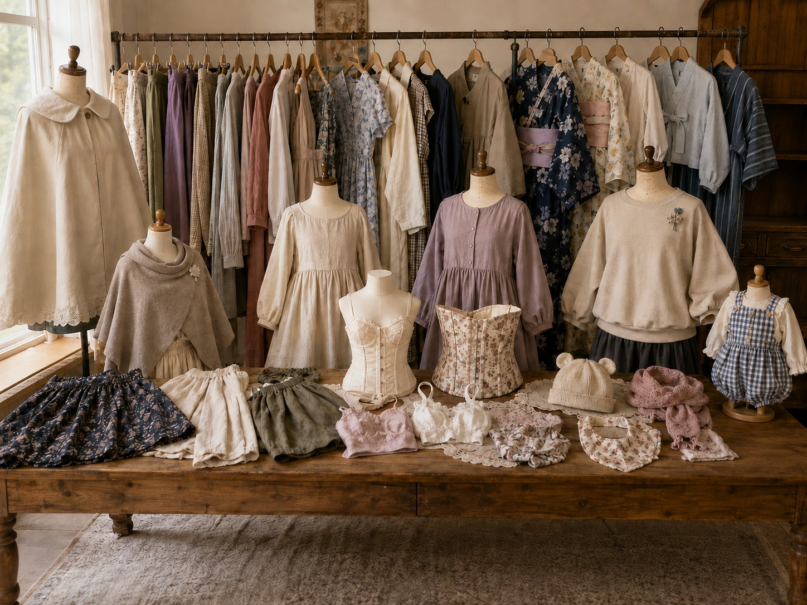
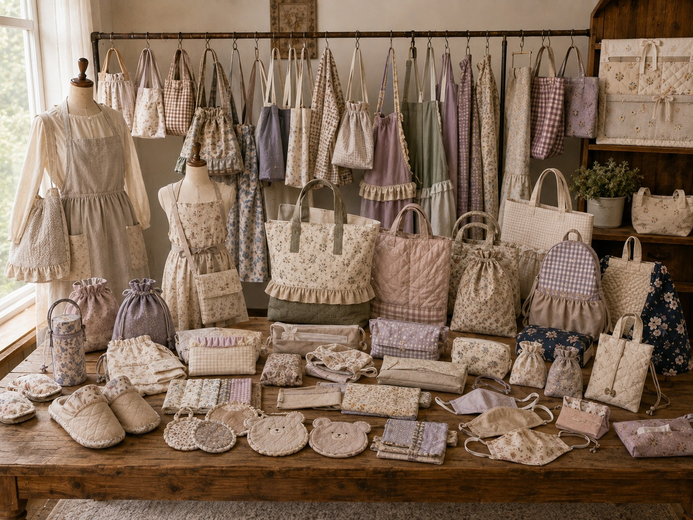
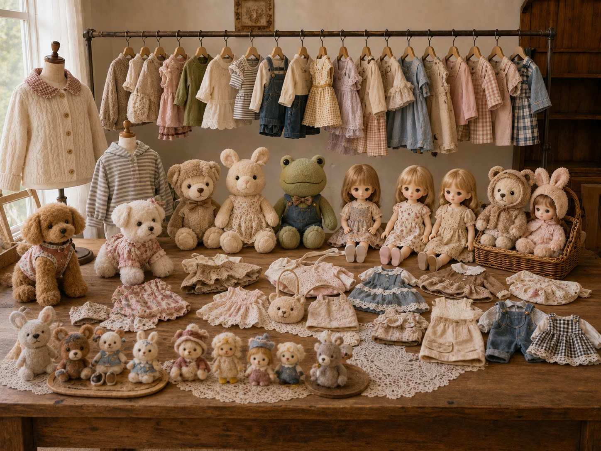
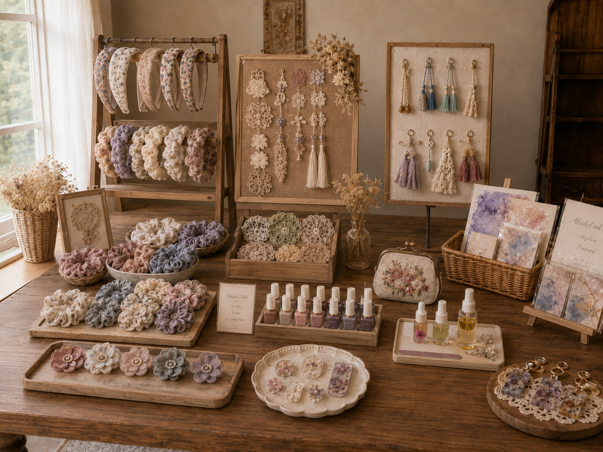

作れるもの
小物からお洋服まで、自由な発想でものづくりを楽しんでいただけます
はじめての方に
窓付きミニポーチ
透明ケースに好きな小物（8cm×6cm・厚み5mmまで）を閉じ込めて、初めてのミシンにチャレンジしてみましょう。
装飾体験
バッグやランチョンマットに刺しゅうやワッペンなどの装飾をプラスするところから始められます。
キットの持ち込み
市販のハンドメイドキットをお持ち込みいただくこともできます。近隣ショップのご案内も可能です。
お洋服
スカート
ズボン
ワンピース
トレーナー
ケープ
浴衣・浴衣ワンピース・甚平・甚平ドレス
ポンチョ
服小物（ビスチェ、コルセット、下着）
赤ちゃん用の服（サロペット）や小物（帽子、スカーフスタイ）

生活用品
バッグ、リュック、レッスンバッグ
エコバッグ、フリルバッグ
フリルポシェット、ショルダーバッグ
グラニーバッグ、トートバッグ
エプロン
ネックウォーマー
カイロ（クマ型、米ぬかタイプ）
鍋つかみ、コースター
ルームシューズ、上履き入れ
ペットボトルカバー
オリジナルカーテン
クッションカバー
入園入学グッズ（キルト布あり）
多彩な形状の巾着やポーチ、ペンケース、コップ袋、お着替え袋、移動ポケット
マスク、マスクケース
ティッシュケース

趣味グッズ
ペットのお洋服
ぬいぐるみ、ぬいぐるみショルダー
ぬいぐるみ服（ピクルス、ダッフィーなど）
人形服（メルちゃん、リカちゃん、ぽぽちゃんなど）
羊毛フェルト人形

小物作り

ヘアバンド、シュシュ
ドゥラーレタッセル
刺しゅう小物
フェルト小物
レジン小物
タティングレース
ビーズアクセサリー
マニキュアフラワー
エシカルネイル
アルコールインクアートのキーホルダー・ハガキ